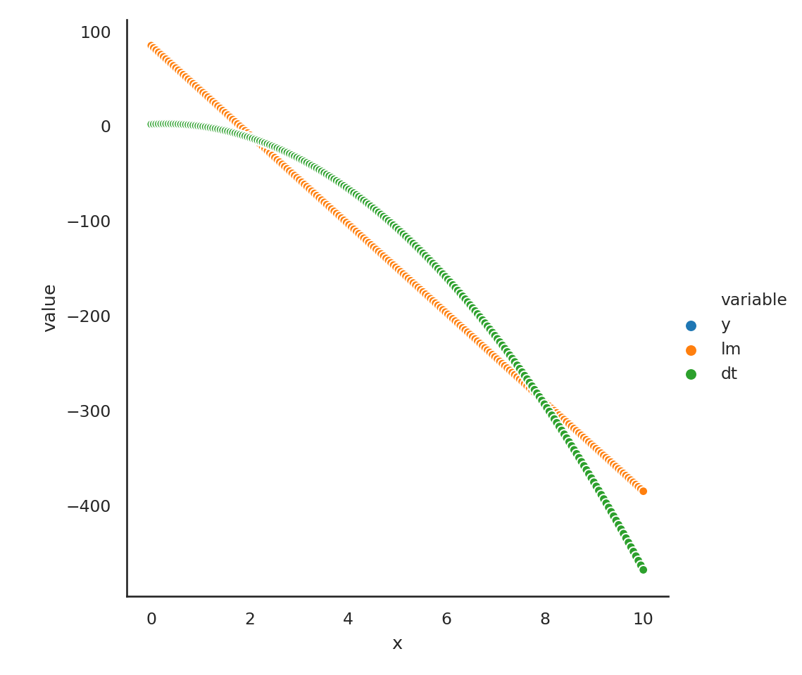

Chapter 7 Machine Learning using Python
7.1 Scikit-learn
Scikit-learn (sklearn) is the main Python package for machine learning. It is a widely-used and well-regarded package. However, there are a couple of challenges to using it given the usual pandas-based data munging pipeline.
sklearnrequires that all inputs be numeric, and in fact,numpyarrays.sklearnrequires that all categorical variables by replaced by 0/1 dummy variablessklearnrequires us to separate the predictors from the outcome. We need to have oneXmatrix for the predictors and oneyvector for the outcome.
The big issue, of course, is the first point. Given we used pandas precisely because we wanted to be able to keep heterogenous data. We have to be able to convert non-numeric data to numeric. pandas does help us out with this problem. First of
all, we know that all pandas Series and DataFrame objects can be converted to numpy arrays using the value or to_numpy functions. Second, we can easily extract a single variable from the data set using either the usual extracton methods or the
pop function. Third, pandas gives us a way to convert all categorical values to numeric dummy variables using the get_dummies function. This is actually a more desirable solution than what you will see in cyberspace, which is to use the
OneHotEncoder function from sklearn. If the outcome variable is not numeric, we can LabelEncoder function from the sklearn.preprocessing submodule.
I just threw a bunch of jargon at you. Let’s see what this means.
7.1.1 Transforming the outcome/target
import numpy as np
import pandas as pd
import sklearn
import matplotlib.pyplot as plt
import seaborn as sns
iris = pd.read_csv('data/iris.csv')
iris.head() sepal_length sepal_width petal_length petal_width species
0 5.1 3.5 1.4 0.2 setosa
1 4.9 3.0 1.4 0.2 setosa
2 4.7 3.2 1.3 0.2 setosa
3 4.6 3.1 1.5 0.2 setosa
4 5.0 3.6 1.4 0.2 setosaLet’s hit the first issue first. We need to separate out the outcome (the variable we want to predict) from the predictors (in this case the sepal and petal measurements).
Another way to do this is
If you look at this, iris now only has 4 columns. So we could just use iris after the pop application, as the predictor set
We still have to update y to become numeric. This is where the sklearn functions start to be handy
array([0, 0, 0, 0, 0, 0, 0, 0, 0, 0, 0, 0, 0, 0, 0, 0, 0, 0, 0, 0, 0, 0,
0, 0, 0, 0, 0, 0, 0, 0, 0, 0, 0, 0, 0, 0, 0, 0, 0, 0, 0, 0, 0, 0,
0, 0, 0, 0, 0, 0, 1, 1, 1, 1, 1, 1, 1, 1, 1, 1, 1, 1, 1, 1, 1, 1,
1, 1, 1, 1, 1, 1, 1, 1, 1, 1, 1, 1, 1, 1, 1, 1, 1, 1, 1, 1, 1, 1,
1, 1, 1, 1, 1, 1, 1, 1, 1, 1, 1, 1, 2, 2, 2, 2, 2, 2, 2, 2, 2, 2,
2, 2, 2, 2, 2, 2, 2, 2, 2, 2, 2, 2, 2, 2, 2, 2, 2, 2, 2, 2, 2, 2,
2, 2, 2, 2, 2, 2, 2, 2, 2, 2, 2, 2, 2, 2, 2, 2, 2, 2])Let’s talk about this code, since it’s very typical of the way the sklearn
code works. First, we import a method (LabelEncoder) from the appropriate
sklearn module. The second line, le = LabelEncoder() works to “turn on” the
method. This is like taking a power tool off the shelf and plugging it in to a
socket. It’s now ready to work. The third line does the actual work. The
fit_transform function transforms the data you input into it based on the
method it is then attached to.
Let’s make a quick analogy. You can plug in both a power washer and a jackhammer to get them ready to go. You can then apply each of them to your driveway. They “transform” the driveway in different ways depending on which tool is used. The washer would “transform” the driveway by cleaning it, while the jackhammer would transform the driveway by breaking it.
There’s an interesting invisible quirk to the code, though. The object le also got transformed during this
process. There were pieces added to it during the fit_transform process.
y = le.fit_transform( pd.read_csv('data/iris.csv')['species'])
d2 = dir(le)
set(d2).difference(set(d1)) # set of things in d2 but not in d1{'classes_'}So we see that there is a new component added, called classes_.
array(['setosa', 'versicolor', 'virginica'], dtype=object)So the original labels aren’t destroyed; they are being stored. This can be useful.
array(['setosa', 'versicolor', 'versicolor', 'virginica', 'setosa'],
dtype=object)So we can transform back from the numeric to the labels. Keep this in hand, since it will prove useful after we have done some predictions using a ML model, which will give numeric predictions.
7.1.2 Transforming the predictors
Let’s look at a second example. The diamonds dataset has several categorical variables that would need to be transformed.
diamonds = pd.read_csv('data/diamonds.csv.gz')
y = diamonds.pop('price').values
X = pd.get_dummies(diamonds)<class 'pandas.core.frame.DataFrame'><class 'pandas.core.frame.DataFrame'>
RangeIndex: 53940 entries, 0 to 53939
Data columns (total 26 columns):
# Column Non-Null Count Dtype
--- ------ -------------- -----
0 carat 53940 non-null float64
1 depth 53940 non-null float64
2 table 53940 non-null float64
3 x 53940 non-null float64
4 y 53940 non-null float64
5 z 53940 non-null float64
6 cut_Fair 53940 non-null uint8
7 cut_Good 53940 non-null uint8
8 cut_Ideal 53940 non-null uint8
9 cut_Premium 53940 non-null uint8
10 cut_Very Good 53940 non-null uint8
11 color_D 53940 non-null uint8
12 color_E 53940 non-null uint8
13 color_F 53940 non-null uint8
14 color_G 53940 non-null uint8
15 color_H 53940 non-null uint8
16 color_I 53940 non-null uint8
17 color_J 53940 non-null uint8
18 clarity_I1 53940 non-null uint8
19 clarity_IF 53940 non-null uint8
20 clarity_SI1 53940 non-null uint8
21 clarity_SI2 53940 non-null uint8
22 clarity_VS1 53940 non-null uint8
23 clarity_VS2 53940 non-null uint8
24 clarity_VVS1 53940 non-null uint8
25 clarity_VVS2 53940 non-null uint8
dtypes: float64(6), uint8(20)
memory usage: 3.5 MBSo everything is now numeric!!. Let’s take a peek inside.
Index(['carat', 'depth', 'table', 'x', 'y', 'z', 'cut_Fair', 'cut_Good',
'cut_Ideal', 'cut_Premium', 'cut_Very Good', 'color_D', 'color_E',
'color_F', 'color_G', 'color_H', 'color_I', 'color_J', 'clarity_I1',
'clarity_IF', 'clarity_SI1', 'clarity_SI2', 'clarity_VS1',
'clarity_VS2', 'clarity_VVS1', 'clarity_VVS2'],
dtype='object')So, it looks like the continuous variables remain intact, but the categorical variables got exploded out. Each
variable name has a level with it, which represents the particular level it is representing. Each of these
variables, called dummy variables, are numerical 0/1 variables. For example, color_F is 1 for those diamonds which have color F, and 0 otherwise.
color D E F G H I J
color_F
0 6775 9797 0 11292 8304 5422 2808
1 0 0 9542 0 0 0 07.2 The methods
We mentioned a bunch of methods in the slides. Let’s look at where they are in sklearn
| ML method | Code to call it |
|---|---|
| Decision Tree | sklearn.tree.DecisionTreeClassifier, sklearn.tree.DecisionTreeRegressor |
| Random Forest | sklearn.ensemble.RandomForestClassifier, sklearn.ensemble.RandomForestRegressor |
| Linear Regression | sklearn.linear_model.LinearRegression |
| Logistic Regression | sklearn.linear_model.LogisticRegression |
| Support Vector Machines | sklearn.svm.LinearSVC, sklearn.svm.LinearSVR |
The general method that the code will follow is :
from sklearn.... import Machine
machine = Machine(*parameters*)
machine.fit(X, y)7.2.1 A quick example
from sklearn.linear_model import LinearRegression
from sklearn.tree import DecisionTreeRegressor
lm = LinearRegression()
dt = DecisionTreeRegressor()Lets manufacture some data
LinearRegression(copy_X=True, fit_intercept=True, n_jobs=None, normalize=False)DecisionTreeRegressor(ccp_alpha=0.0, criterion='mse', max_depth=None,
max_features=None, max_leaf_nodes=None,
min_impurity_decrease=0.0, min_impurity_split=None,
min_samples_leaf=1, min_samples_split=2,
min_weight_fraction_leaf=0.0, presort='deprecated',
random_state=None, splitter='best')p1 = lm.predict(d)
p2 = dt.predict(d)
d['y'] = y
d['lm'] = p1
d['dt'] = p2
D = pd.melt(d, id_vars = 'x')
sns.relplot(data=D, x = 'x', y = 'value', hue = 'variable')<seaborn.axisgrid.FacetGrid object at 0x13e30e820>
7.3 A data analytic example
<class 'pandas.core.frame.DataFrame'>
RangeIndex: 53940 entries, 0 to 53939
Data columns (total 10 columns):
# Column Non-Null Count Dtype
--- ------ -------------- -----
0 carat 53940 non-null float64
1 cut 53940 non-null object
2 color 53940 non-null object
3 clarity 53940 non-null object
4 depth 53940 non-null float64
5 table 53940 non-null float64
6 price 53940 non-null int64
7 x 53940 non-null float64
8 y 53940 non-null float64
9 z 53940 non-null float64
dtypes: float64(6), int64(1), object(3)
memory usage: 4.1+ MBFirst, lets separate out the outcome (price) and the predictors
For many machine learning problems, it is useful to scale the numeric predictors so that they have mean 0 and variance 1. First we need to separate out the categorical and numeric variables
Now let’s scale the columns of d1
array([[-1.19816781, -0.17409151, -1.09967199, -1.58783745, -1.53619556,
-1.57112919],
[-1.24036129, -1.36073849, 1.58552871, -1.64132529, -1.65877419,
-1.74117497],
[-1.19816781, -3.38501862, 3.37566251, -1.49869105, -1.45739502,
-1.74117497],
...,
[-0.20662095, 0.73334442, 1.13799526, -0.06343409, -0.04774083,
0.03013526],
[ 0.13092691, -0.52310533, 0.24292836, 0.37338325, 0.33750627,
0.28520393],
[-0.10113725, 0.31452784, -1.09967199, 0.08811478, 0.11861587,
0.14349912]])Woops!! We get a numpy array, not a DataFrame!!
Now, let’s recode the categorical variables into dummy variables.
and put them back together
Next we need to split the data into a training set and a test set. Usually we do this as an 80/20 split. The purpose of the test set is to see how well the model works on an “external” data set. We don’t touch the test set until we’re done with all our model building in the training set. We usually do the split using random numbers. We’ll put 40,000 observations in the training set.
ind = list(X.index)
np.random.shuffle(ind)
X_train, y_train = X.loc[ind[:40000],:], y[ind[:40000]]
X_test, y_test = X.loc[ind[40000:],:], y[ind[40000:]]There is another way to do this
from sklearn.model_selection import train_test_split
X_train, X_test, y_train, y_test = train_test_split(X, y , test_size = 0.2, random_state= 40)Now we will fit our models to the training data. Let’s use a decision tree model, a random forest model, and a linear regression.
from sklearn.linear_model import LinearRegression
from sklearn.tree import DecisionTreeRegressor
from sklearn.ensemble import RandomForestRegressor
lm = LinearRegression()
dt = DecisionTreeRegressor()
rf = RandomForestRegressor()Now we will use our training data to fit the models
LinearRegression(copy_X=True, fit_intercept=True, n_jobs=None, normalize=False)DecisionTreeRegressor(ccp_alpha=0.0, criterion='mse', max_depth=None,
max_features=None, max_leaf_nodes=None,
min_impurity_decrease=0.0, min_impurity_split=None,
min_samples_leaf=1, min_samples_split=2,
min_weight_fraction_leaf=0.0, presort='deprecated',
random_state=None, splitter='best')RandomForestRegressor(bootstrap=True, ccp_alpha=0.0, criterion='mse',
max_depth=None, max_features='auto', max_leaf_nodes=None,
max_samples=None, min_impurity_decrease=0.0,
min_impurity_split=None, min_samples_leaf=1,
min_samples_split=2, min_weight_fraction_leaf=0.0,
n_estimators=100, n_jobs=None, oob_score=False,
random_state=None, verbose=0, warm_start=False)We now need to see how well the model fit the data. We’ll use the R2 statistic to be our metric of choice to evaluate the model fit.
from sklearn.metrics import r2_score
f"""
Linear regression: {r2_score(y_train, lm.predict(X_train))},
Decision tree: {r2_score(y_train, dt.predict(X_train))},
Random Forest: {r2_score(y_train, rf.predict(X_train))}
"""'\nLinear regression: 0.9202636015648039, \nDecision tree: 0.9999965428396391,\nRandom Forest: 0.9973332203218832\n'This is pretty amazing. However, we know that if we try and predict using the same data we used to train the model, we get better than expected results. One way to get a better idea about the true performance of the model when we will try it on external data is to do cross-validation.
In cross-validation, we split the dataset up into 5 equal parts randomly. We then train the model using 4 parts and predict the data on the 5th part. We do for all possible groups of 4 parts. We then consider the overall performance of prediction.
from sklearn.model_selection import cross_val_score
cv_score = cross_val_score(dt, X_train, y_train, cv=5)
f"CV error = {np.mean(cv_score)}"'CV error = 0.9645548465259115'If we weren’t satisfied with this performance, we could optimize the parameters of the decision tree to see
if we could improve performance. The way to do that would be to use sklearn.model_selection.GridSearchCV, giving
it ranges of the parameters we want to optimize. For a decision tree these would be the maximum depth of the tree, the size of the smallest leaf, and the maximum number of features (predictors) to consider at each split. See help(DecisionTreeRegressor) for more details.
So how does this do on the test set?
0.9660726724506655